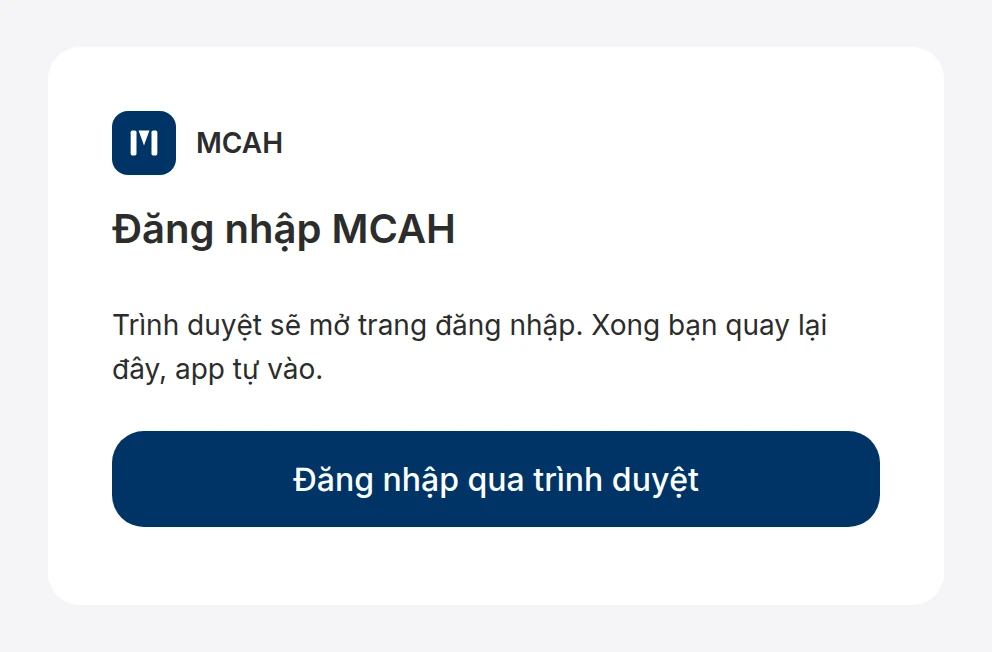
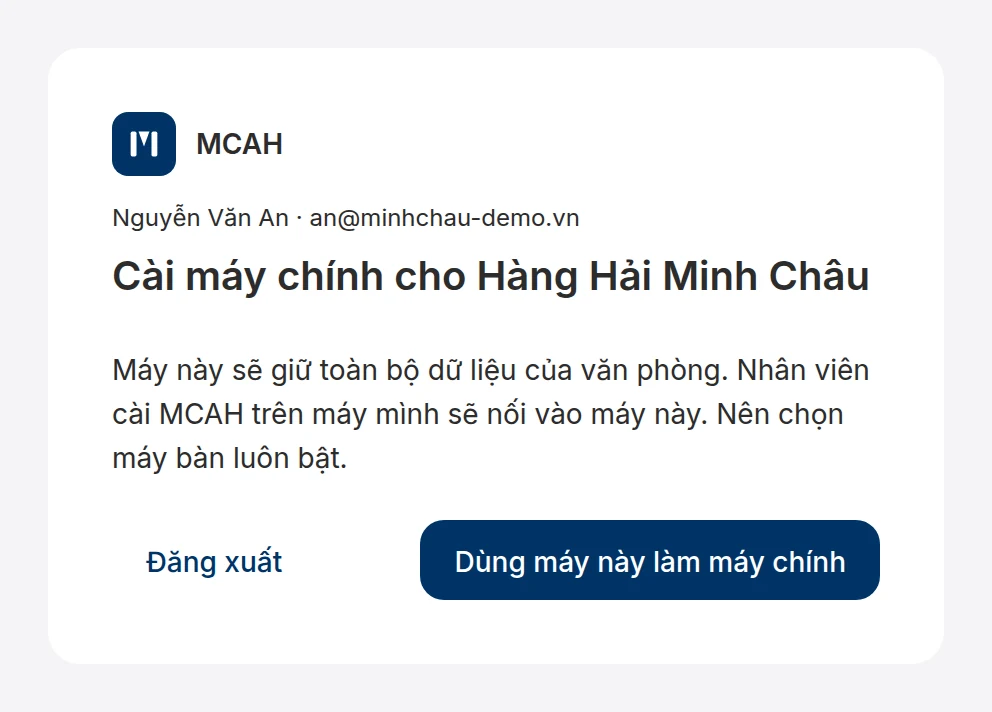
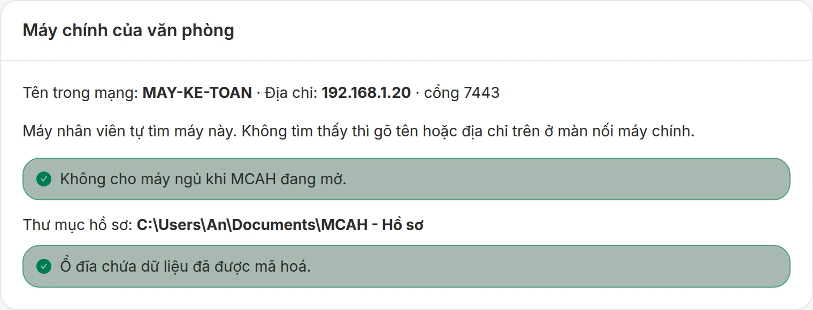
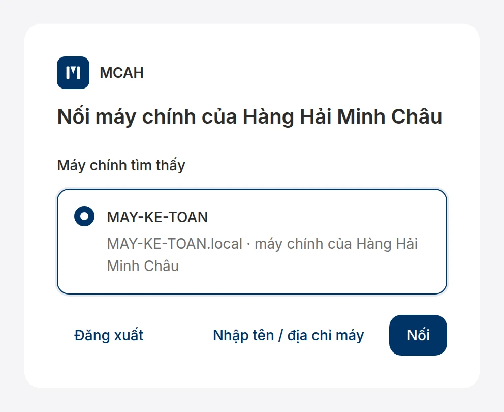
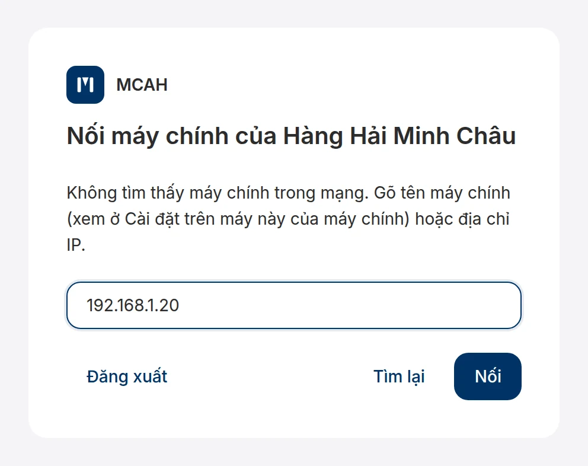

Cài máy chính và máy nhân viên
Cài MCAH cho cả văn phòng theo đúng thứ tự, và xử lý khi máy nhân viên không nối được.
Bản MCAH tải về máy tính (Windows hoặc Ubuntu) không để dữ liệu trên mạng. Toàn bộ dữ liệu của văn phòng nằm trên một máy chính. Các máy còn lại là máy nhân viên (máy phụ): chúng nối vào máy chính qua mạng nội bộ của văn phòng (cùng wifi hoặc cùng dây mạng) và làm việc trên dữ liệu của máy chính. Internet chỉ cần lúc đăng nhập.
Làm theo đúng thứ tự này
Bước A làm một lần cho cả văn phòng. Bước B và C làm cho từng nhân viên. Nhân viên cài trước khi có máy chính thì MCAH chỉ báo "Văn phòng chưa có máy chính" và chờ.
Trước khi bắt đầu
| Cần có | Chi tiết |
|---|---|
| Tài khoản quản trị văn phòng | Khi văn phòng mua MCAH, MCAH tạo sẵn tài khoản quản trị bằng email văn phòng cung cấp. MCAH không có trang đăng ký và không dùng mật khẩu. |
| Một máy làm máy chính | Nên là máy bàn, để ở văn phòng, bật suốt giờ làm. Windows 10 / 11 64-bit hoặc Ubuntu 22.04 / 24.04 64-bit, RAM từ 8 GB, ổ đĩa trống từ 10 GB. Không nên dùng máy xách tay hay mang về nhà. |
| Máy nhân viên | Cùng hệ điều hành như trên, RAM từ 4 GB. |
| Cùng một mạng | Mọi máy vào cùng wifi hoặc cùng dây mạng của văn phòng. Wifi khách (Guest) thường chặn các máy nhìn thấy nhau, không dùng được. |
| Internet | Cần khi đăng nhập (lần đầu và 30 ngày một lần). Làm việc hằng ngày giữa các máy không cần internet. |
A. Cài máy chính (quản trị văn phòng làm)
- Ngồi ở máy đã chọn làm máy chính. Mở trình duyệt, vào mcah.axalize.vn/download, bấm Tải cho Windows hoặc Tải cho Ubuntu (.deb).
- Windows: mở tệp MCAH Setup ….exe vừa tải. Nếu hiện "Windows đã bảo vệ máy tính của bạn", bấm Thêm thông tin → Vẫn chạy. Làm theo bộ cài tới khi xong. Khi Windows hỏi "Bạn có muốn cho phép ứng dụng này thực hiện thay đổi?", bấm Có: đây là bước mở cổng để máy nhân viên nối vào được.
Ubuntu: mở tệp mcah-desktop_….deb bằng App Center và bấm Cài, hoặc mở Terminal ở thư mục Tải về và chạysudo apt install ./mcah-desktop_*.deb. - Mở MCAH từ menu ứng dụng (hoặc biểu tượng trên màn hình). Lần đầu mất vài giây để chuẩn bị dữ liệu.
- Bấm Đăng nhập qua trình duyệt. Trình duyệt mở trang đăng nhập MCAH: bấm Tiếp tục với Google nếu email quản trị là tài khoản Google; nếu không, nhập email, bấm Tiếp tục với email, mở hộp thư lấy mã 6 số và nhập vào trang.
- Trang báo "Đã đăng nhập". Quay lại cửa sổ MCAH, app tự vào. App không tự vào thì bấm Nhập mã thủ công và dán mã 8 ký tự trên trang.
- MCAH hiện màn "Cài máy chính cho [tên văn phòng]". Kiểm lại đúng tên văn phòng và đúng máy, rồi bấm Dùng máy này làm máy chính.
- MCAH mở trang Tổng quan: máy chính đã sẵn sàng. Lần đầu Windows có thể hiện hộp tường lửa hỏi cho MCAH dùng mạng: tích Mạng riêng (Private) rồi bấm Cho phép.
- Bấm tên của bạn ở góc trên bên phải → Cài đặt trên máy này, xem thẻ Máy chính của văn phòng. Ghi lại Tên trong mạng (ví dụ
MAY-KE-TOAN) và Địa chỉ (ví dụ192.168.1.20). Nhân viên cần một trong hai thứ này nếu máy họ không tự tìm thấy máy chính.



Chạy thêm một lần trên máy chính: sudo ufw allow 7443/tcp. Không chắc máy có bật ufw thì cứ chạy, lệnh này không hại gì.
Máy chính vào được Tổng quan, và Cài đặt trên máy này có thẻ Máy chính của văn phòng ghi tên và địa chỉ máy.
B. Thêm tài khoản cho nhân viên (quản trị văn phòng làm)
- Trên máy chính, vào Quản trị → Tài khoản → Thêm tài khoản.
- Nhập email nhân viên (email họ mở được hộp thư, hoặc email Google của họ), họ tên và vai trò. Lưu. Bước này cần internet.
- MCAH không gửi thư mời. Bạn tự báo nhân viên: tải MCAH, đăng nhập bằng đúng email vừa nhập, và cho họ tên hoặc địa chỉ máy chính đã ghi ở bước A.
C. Cài máy nhân viên (từng nhân viên làm trên máy mình)
- Kiểm trước: máy chính đang bật và đang mở MCAH, máy của bạn vào cùng mạng văn phòng với máy chính.
- Tải và cài MCAH giống bước A1 – A2. Windows hỏi quyền thay đổi thì cứ bấm Có.
- Mở MCAH, bấm Đăng nhập qua trình duyệt, đăng nhập bằng email quản trị đã thêm cho bạn (Google hoặc mã 6 số), giống bước A4 – A5.
- MCAH hiện màn "Nối máy chính của [tên văn phòng]" và tự tìm trong mạng, chờ vài giây.
- Tìm thấy: danh sách Máy chính tìm thấy hiện tên máy chính. Chọn đúng máy, bấm Nối.
Không tìm thấy: MCAH hiện ô nhập. Gõ tên máy chính (ví dụMAY-KE-TOAN) hoặc địa chỉ (ví dụ192.168.1.20) mà quản trị đưa, bấm Nối. Gõ tên không được thì thử địa chỉ. - MCAH mở trang Tổng quan với dữ liệu của văn phòng: máy bạn đã nối xong. Từ lần sau chỉ cần mở MCAH, app tự nối máy chính.


Máy nhân viên thấy cùng danh sách thuyền viên, tàu như máy chính, và quản trị thấy máy đó trong Quản trị → Máy trong văn phòng.
Gặp màn này thì làm gì
| MCAH báo | Nghĩa là | Cách xử lý |
|---|---|---|
| Cần kết nối internet để đăng nhập | Máy chưa có mạng ra ngoài. | Nối wifi hoặc dây mạng có internet rồi bấm lại Đăng nhập qua trình duyệt. |
| Tài khoản chưa thuộc văn phòng nào | Email bạn vừa dùng chưa được thêm vào văn phòng, hoặc bạn đăng nhập nhầm email. | Bấm Đăng xuất, đăng nhập lại bằng đúng email. Vẫn báo thì nhờ quản trị làm bước B. |
| Văn phòng chưa có máy chính | Quản trị chưa làm xong bước A. | Chờ quản trị cài máy chính, rồi bấm Thử lại. |
| Không tìm thấy máy chính trong mạng | Máy bạn không nhìn thấy máy chính. | Gõ tên hoặc địa chỉ máy chính rồi bấm Nối. Không được thì xem mục ngay dưới. |
| Không nối máy này · Máy … không phải máy chính của … | Địa chỉ bạn gõ là một máy khác, có thể là máy lạ giả tên máy chính. | Không nhập gì thêm. Báo quản trị, kiểm lại tên / địa chỉ ở bước A8, bấm Tìm lại. |
| Đang chờ quản trị duyệt | Máy này từng bị gỡ khỏi văn phòng và đang xin vào lại. | Quản trị vào Quản trị → Máy trong văn phòng, bấm Duyệt. Máy bạn tự vào, không cần bấm gì. |
| Dải đỏ "Không nối được máy chính" | Đang làm thì máy chính tắt, thoát MCAH hoặc mất mạng. | Bật lại máy chính và mở MCAH. Máy bạn tự nối lại; chữ đang gõ vẫn còn, bấm Lưu lại như thường. |
Máy nhân viên vẫn không nối được
Kiểm lần lượt, mỗi bước xong thì thử bấm Nối lại:
- Trên máy chính, MCAH đang mở (thu nhỏ cũng được), không phải chỉ bật máy.
- Hai máy cùng một mạng: cùng tên wifi, không phải wifi khách. Gõ địa chỉ IP thay cho tên máy.
- Máy chính Windows: vào Cài đặt → Mạng & Internet → chọn wifi hoặc Ethernet đang dùng → Loại hồ sơ mạng chọn Riêng tư (Private). Để Công cộng (Public) thì Windows chặn máy nhân viên.
- Máy chính Windows, lúc cài đã bấm "Không": chạy lại bộ cài MCAH trên máy chính (dữ liệu không mất) và lần này bấm Có.
- Máy chính Ubuntu: chạy
sudo ufw allow 7443/tcp. - Vẫn không được: chụp màn hình lỗi trên máy nhân viên và thẻ Máy chính của văn phòng trên máy chính, gửi bộ phận hỗ trợ MCAH.
Ghi nhớ hằng ngày
- Sáng: bật máy chính và mở MCAH trước, rồi các máy nhân viên mới mở MCAH.
- Không tắt máy chính hay thoát MCAH trên máy chính khi còn người đang làm. MCAH tự giữ máy chính không ngủ khi đang mở.
- Địa chỉ máy chính có thể đổi sau khi khởi động lại modem / router. Nên nhờ người lo mạng đặt địa chỉ IP cố định cho máy chính.
- MCAH không tự sao lưu: dữ liệu chỉ nằm trên máy chính. Văn phòng tự có cách sao lưu máy chính. Muốn đổi sang máy chính khác, liên hệ hỗ trợ MCAH trước, không tự gỡ MCAH trên máy chính.
- Nhân viên nghỉ hoặc mất máy: quản trị vào Quản trị → Máy trong văn phòng → Gỡ máy đó, và tắt tài khoản ở Quản trị → Tài khoản.